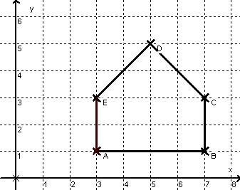

parent nodes: Stationen
Straßen und Häuser
1. Straßen
Öffne im Verzeichnis Stationen die Datei Koordinatensystem.krv
Wenn du die blaue Straße entlanggehst, kommst du an einen Punkt A auf einer Kästchenecke.
Suche mindestens fünf solcher Punkte auf jeder der drei Straßen und schreibe sie so in dein Heft:
Blau: A(4 /3), B (?/ ?) ...
Rot: M(?/?),...
Schwarz: ...
Erst kommt der x-Wert (nach rechts) und dann der y-Wert (nach oben).
Wähle im Menü <Steuerung/Punkte>. Dort siehst du die Koordinaten des Punktes A in einer Tabelle eingetragen. Schreibe deine gefundenen Punkte darunter.
Kontrolliere durch Klick auf <ZeichneNeu>, ob der Punkt auch auf der Straße liegt!
2. Haus
Hier siehst du ein Haus aus den Punkten A, B, C...

Schreibe die Koordinaten in dieser Form im Heft auf:
Klicke dann auf der Karteikarte <Aufgabe> auf <Weiter>!
Hier ist das Haus schon ein wenig gezeichnet. Die Wände und das Dach fehlen noch.
Gib die Punkte in der richtigen Reihenfolge in die Karte Punkte ein.
Falls du dich wunderst, dass nur Punkte und keine Strecken auftauchen, dann liegt das an dem Zauberbefehl #s für „Strecke zu diesem Punkt“.
Wenn du die Reihenfolge falsch hattest, wird sich kein Haus ergeben.
Wenn es trotzdem krumm und schief ist oder auf der Seite steht, dann schau noch einmal, ob zuerst der x und dann der y-Wert aufgeschrieben wurde.
Am Ende der Liste muss der Punkt A noch einmal eingetragen werden, sonst fehlt eine Wand!
3. Extra
Zeichne in das Heft ein Haus vom Nikolaus, schreibe die Punkte an die Ecken und überlege, in welcher Reihenfolge z. B. A – B – E... du das Haus in einem Zug gemalt hast.
Ändere dann die Punkte auf der Karteikarte Punkte in diese Reihenfolge. (Einige kommen doppelt vor!)
Wenn du alles richtig gemacht hast, wurden nur 9 Zeilen (Punkte) benötigt.